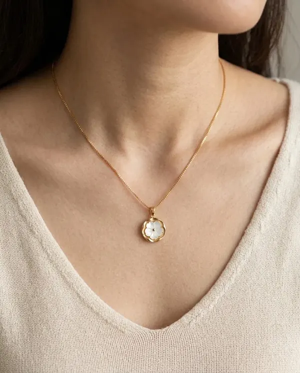
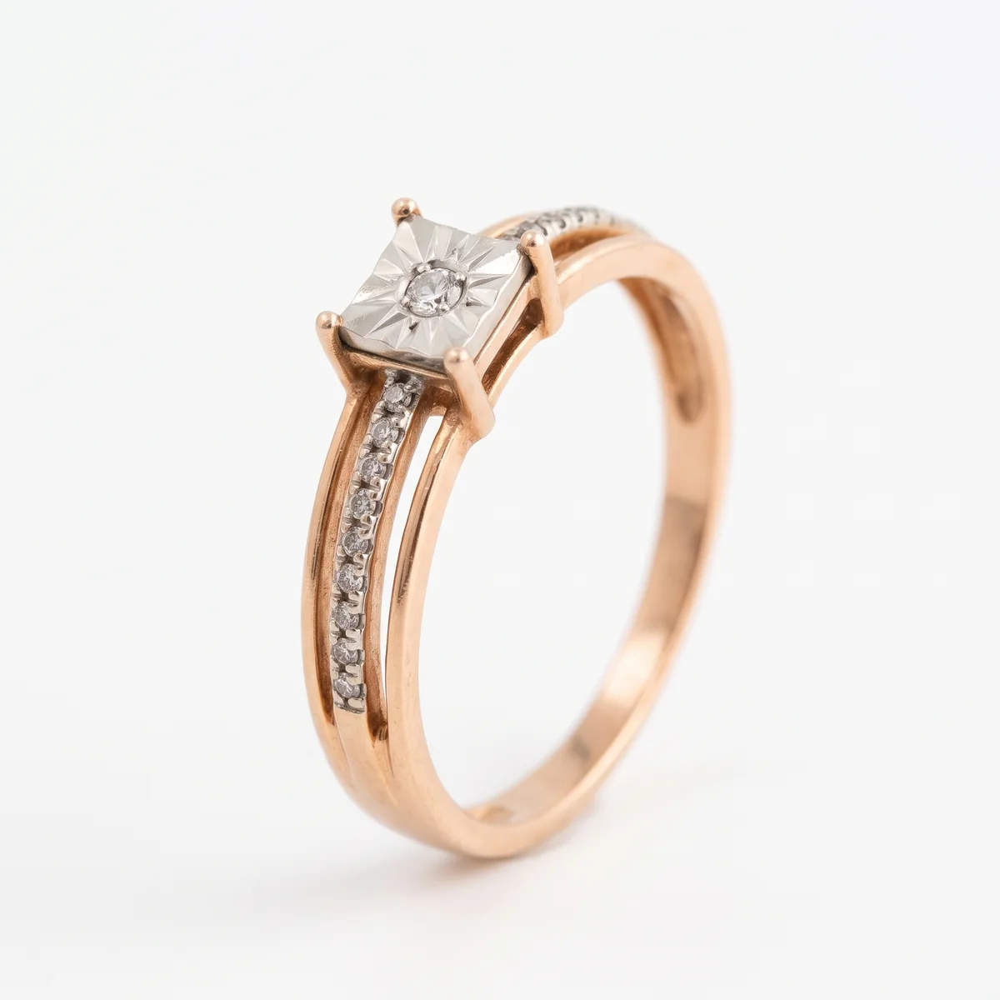
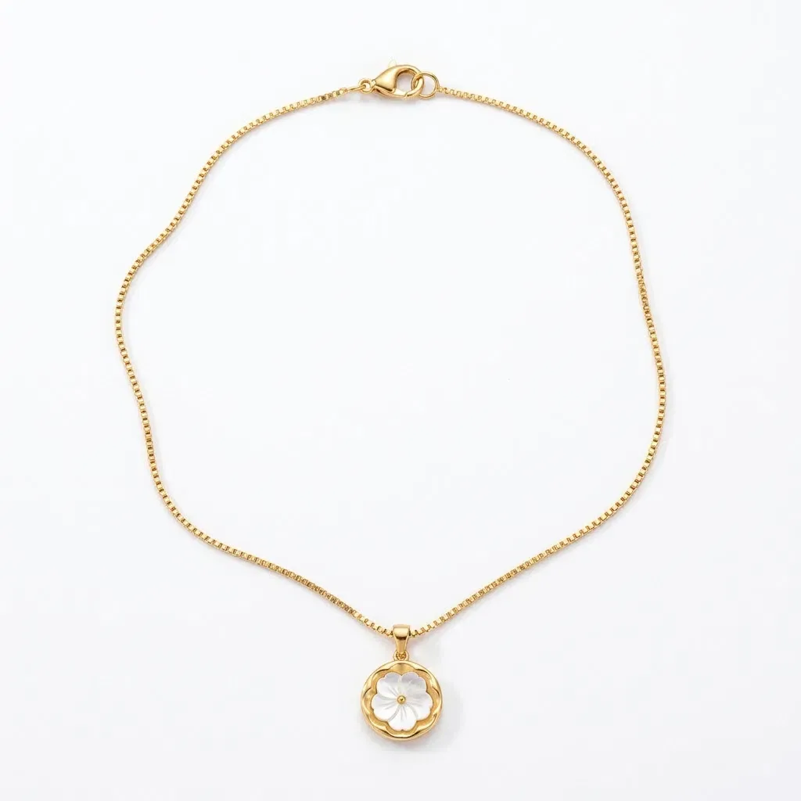
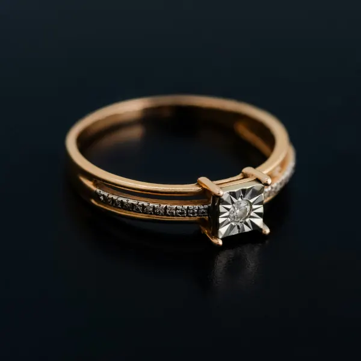
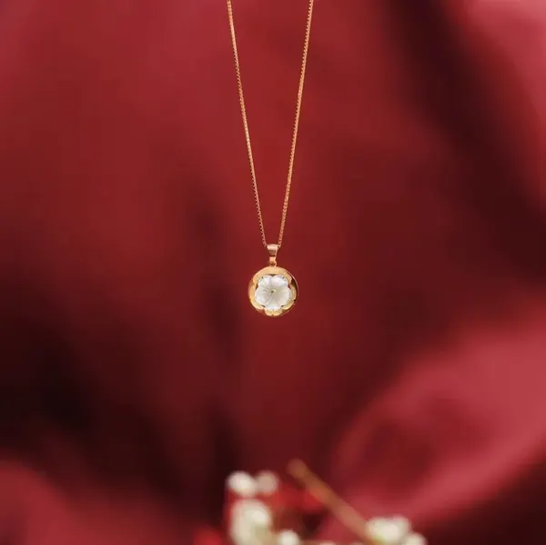
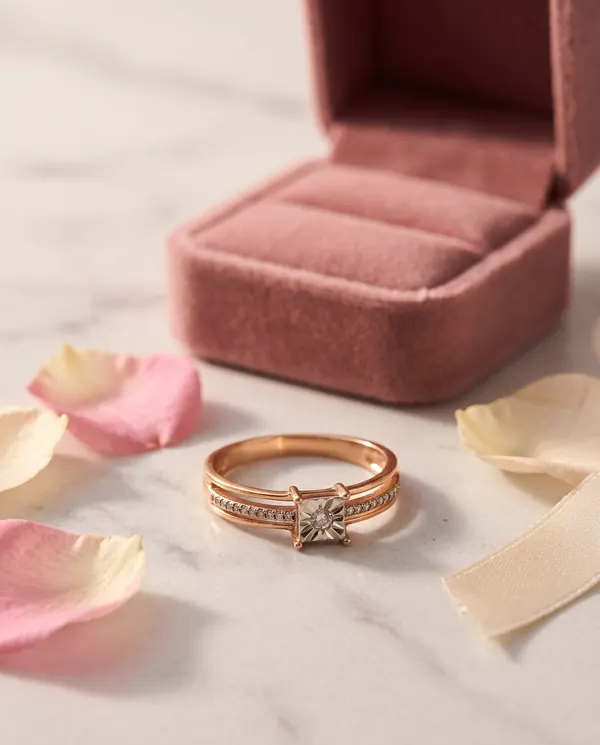

На вигляді згори AI поставив вставку поперек отвору каблучки, таку не одягнеш. Переписав промпт: каблучка стоїть, камера дивиться на камінь згори.
Ювелірна майстерня · демо
Світло, яке носять щодня
Каблучка з червоного золота і підвіска з перламутровою квіткою. Усі кадри зроблені з одного стокового фото кожної прикраси за допомогою AI і ручної ретуші.
- 2прикраси
- 10готових кадрів
- 1вихідне фото на кожну


Наведіть, щоб збільшити01 · Каблучка
«Сяйво»
Подвійна шинка з доріжкою дрібних каменів і квадратна вставка з білого золота з гравіюванням-зіркою, яка візуально збільшує центральний камінь.
- Метал
- червоне і біле золото
- Вставка
- центральний камінь і доріжка
- Кадрів
- 5 + лайфстайл
Набір як у карточці магазину: головне фото на білому, вигляд згори, макро деталі і фото на руці, щоб було видно реальний розмір.
02 · Підвіска
«Квітка»
Кругла підвіска з хвилястим обідком і квіткою з перламутру на тонкому ланцюжку плетіння «коробочка».
- Метал
- жовте золото
- Вставка
- перламутр, пʼять пелюсток
- Кадрів
- 4
Є і коротке відео: підвіска гойдається, і видно як переливається перламутр. На головному фото підвіска справді маленька поруч з ланцюжком: покупець одразу бачить масштаб, а деталі квітки показує макро.

Наведіть, щоб збільшитиДо і після
Зі стокового фото в каталог
Потягніть повзунок. Зліва вихідне фото з безкоштовного фотостоку, справа готовий кадр для магазину.


Що виправив після AI
AI помиляється в деталях. Ловити їх і є робота ретушера
На макро біля центрального каменя зʼявився зайвий металевий виступ. Уточнив у промпті рівний обідок і чотири лапки лише по кутах.
Каблучка «зʼїхала» між суглобами. Описав точне місце: безіменний палець, біля основи, поруч з кісточкою.
Перша генерація зробила масивну підвіску. Задав реальний масштаб: ланцюжок 45 см, підвіска близько 12 мм.
Ланцюжок лежав як жорсткий дріт. Попросив мʼяку природну форму, як у справжнього ланцюжка.
На кадрі застібки AI намалював дві підвіски, хоча вона одна. Прибрав підвіску з кадру зовсім.

Для соцмереж
Той самий виріб, інший настрій
Каталог продає деталі, а лайфстайл продає відчуття. Один еталон прикраси, і з нього серія кадрів у різних сценах без нової зйомки.
Як зроблено
Чотири кроки
- Вихідне фото
Одне фото прикраси з безкоштовного фотостоку з дозволом на зміну.
- Еталон у промпті
До кожного промпту додаю оригінал і перелічую деталі, які не можна міняти: метал, кількість каменів, форму вставки.
- Серія кадрів
Головне фото, згори, макро, на тілі, лайфстайл. Кожен кадр з оригіналу, щоб помилки не накопичувались.
- Перевірка і правки
Звіряю з оригіналом і реальною анатомією, ловлю зайві деталі, виправляю промптом або вручну.
Інструменти: Gemini (Nano Banana), Photopea. Сторінка: HTML, CSS, JavaScript.